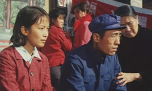
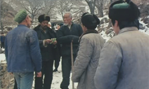
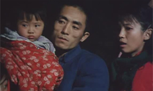
Old Well was produced by Xi'an Film Studio and directed by Wu Tianming. Zhang Yimou starred in this as an actor along with Liang Yujin. The film won the 8th Golden Rooster awards in 1988 for Best Picture, Director, Leading Male Actor and Supporting Female Actor. The film also won the Best Feature Film and Leading Male Actor awards at the 1987 Tokyo International Film Festival.
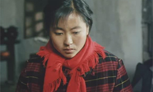
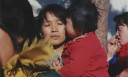
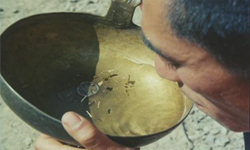
The film is based on the novel of the same name, written by Zheng Yi. A married village worker teams up with an old girlfriend to try to dig a well for his water-starved village. The well collapses and they are trapped. Their enforced confinement leads to them exploring their feelings for each other and those around them.
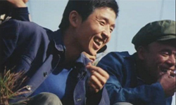
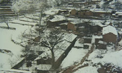
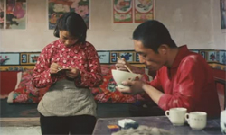
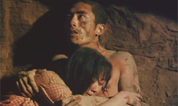
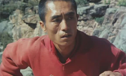
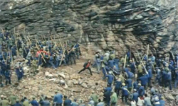
Wu Tianming, Zhang Yimou's mentor, was head of the Xi'an Film Studio at the time as well as a brilliant director in his own right. Zhang Yimou was one of the film's two credited cinematographers. His sharp eye, as well as his chiselled cheekbones, are very much in evidence, but so are Wu Tianming's intelligence, heart and soul. In the late 1980s, he played a crucial role in encouraging and supporting the young "Fifth Generation" directors and helping to assure that their films were shown at as many international film festivals as possible; the more worldwide exposure they had, the harder it would be for the authorities to censor or punish them without causing a worldwide incident. After the Tiananmen massacre, he left China for Los Angeles, but returned from exile when the political situation permitted. His deeply moving last films, King of Masks and The Song of the Phoenix, are considered by some critics as among the greatest works of Chinese cinema.
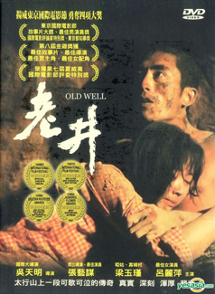
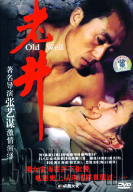
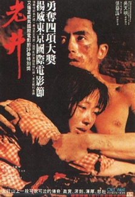